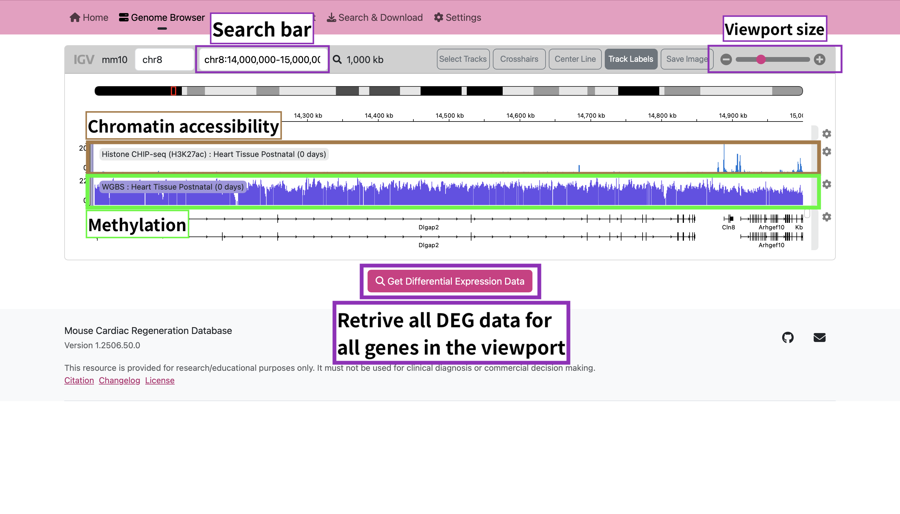
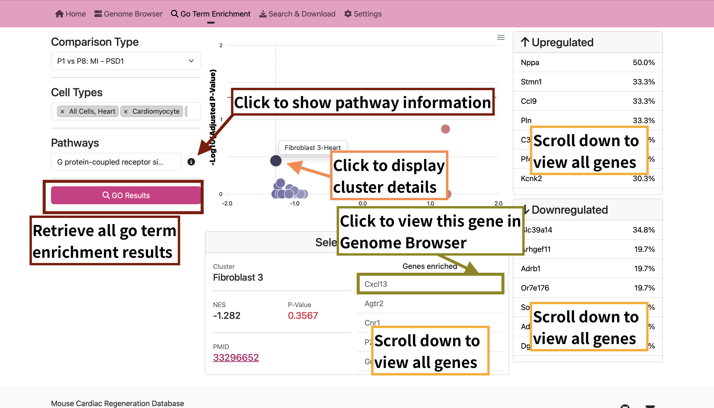
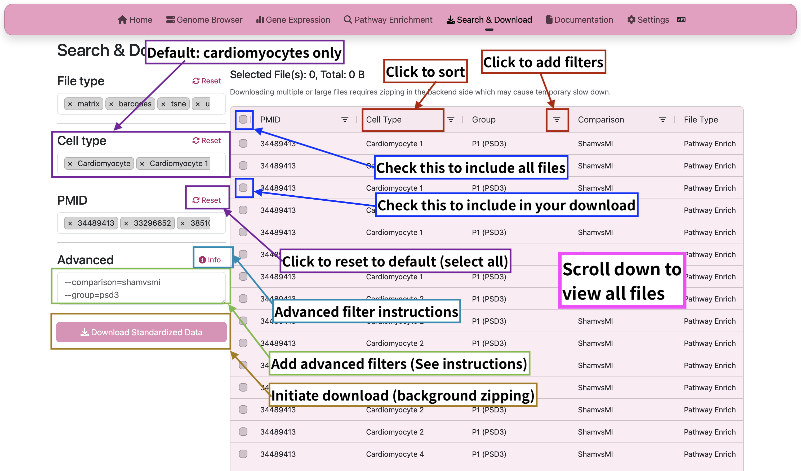

<div class="container">
  <!-- Main Header -->
  <div class="row mt-2 mt-2">
    <h1 style="color: var(--bs-pink); font-weight: normal;" class="text-center"><b>M</b>ouse <b>CA</b>rdiac
      <b>RE</b>generation <b>D</b>ata<b>b</b>ase
    </h1>
    <h3 class="text-center">Exploring Cardiac Regeneration Through Developmental Transcriptomics</h3>

    <!-- Key Comparative Insight -->
    <div class="row highlight-section mt-2">
      <div class="col-md-8 offset-md-2 text-center">
        <p class="research-focus">
          Neonatal (P1 - P6) vs. Postnatal (P7+) Heart Regeneration Capacity:
          <br>
          <span>Uncovering the molecular drivers of cardiomyocyte proliferation decline</span>
        </p>
      </div>
    </div>
    <!-- Database Features new-->
    <h3 class="col-12 mt-4">User Guide</h3>
    <div class="accordion" id="accordionExample">
      <div class="accordion-item">
        <h2 class="accordion-header">
          <button class="accordion-button collapsed" type="button" data-bs-toggle="collapse"
            data-bs-target="#collapseOne" aria-expanded="true" aria-controls="collapseOne">
            <div class="row">
              <h3>Genome Browser</h3>
              <p class="mb-0">View how Genes differ in expression levels accross Age, Cell Groups and Experimental
                Conditions</p>
            </div>
          </button>
        </h2>
        <div id="collapseOne" class="accordion-collapse collapse" data-bs-parent="#accordionExample">
          <div class="accordion-body">
            <div class="row">
              <div class="col-lg-8 col-md-12">
                <div id="carouselExampleCaptions" class="carousel carousel-mcaredb slide"
                  style="border: var(--bs-border-width) solid var(--bs-border-color-translucent); border-radius: var(--bs-border-radius); background: rgba(var(--bs-body-color-bg), .2);">
                  <div class="carousel-indicators">
                    <button type="button" data-bs-target="#carouselExampleCaptions" data-bs-slide-to="0" class="active"
                      aria-current="true" aria-label="Slide 1"></button>
                    <button type="button" data-bs-target="#carouselExampleCaptions" data-bs-slide-to="1"
                      aria-label="Slide 2"></button>
                    <button type="button" data-bs-target="#carouselExampleCaptions" data-bs-slide-to="2"
                      aria-label="Slide 3"></button>
                  </div>
                  <div class="carousel-inner">
                    <div class="carousel-item active">
                      
                      <!--<div class="carousel-caption d-none d-md-block">
                      <h4>How to use IGV</h4>
                      <ol class="text-start">
                        <li>Use the search bar to navigate to a specific gene, or drag on the IGV window to select
                          certain
                          areas. You can view chromatin accessibility (Histone CHIP-seq) and methylation level (WGBS)
                          tracks
                          in IGV.</li>
                        <li>Click "Get Differential Expression Data" to get data of each gene.</li>
                      </ol>
                    </div>-->
                    </div>
                    <div class="carousel-item">
                      
                    </div>
                    <div class="carousel-item">
                      
                    </div>
                  </div>
                  <button class="carousel-control-prev" type="button" data-bs-target="#carouselExampleCaptions"
                    data-bs-slide="prev">
                    <span class="carousel-control-prev-icon" aria-hidden="true"></span>
                    <span class="visually-hidden">Previous</span>
                  </button>
                  <button class="carousel-control-next" type="button" data-bs-target="#carouselExampleCaptions"
                    data-bs-slide="next">
                    <span class="carousel-control-next-icon" aria-hidden="true"></span>
                    <span class="visually-hidden">Next</span>
                  </button>
                </div>

              </div>
              <div class="col-lg-4 col-md-12">
                <h4>How to use IGV</h4>
                <ol>
                  <li>Use the search bar to navigate to a specific gene, or drag on the IGV window to select certain
                    areas. You can view chromatin accessibility (Histone CHIP-seq) and methylation level (WGBS) tracks
                    in IGV.</li>
                  <li>Click "Get Differential Expression Data" to get data of each gene.</li>
                </ol>
                <h4>Key Features</h4>
                <ul>
                  <li>View comparison groups in the card body. You can compare P1 / P8 (Group 1) or Sham / MI (Group
                    2) currently.</li>
                  <li>Click the card to expand statistical data. Hit any data point on the scatter plot to show UMAP,
                    TSNE and meta information.</li>
                  <li></li>
                </ul>
              </div>
            </div>
          </div>
        </div>
      </div>
      <div class="accordion-item">
        <h2 class="accordion-header">
          <button class="accordion-button collapsed" type="button" data-bs-toggle="collapse"
            data-bs-target="#collapseTwo" aria-expanded="false" aria-controls="collapseTwo">
            <div class="row">
              <h3>Go Term Enrichment</h3>
              <p class="mb-0">Explore how various pathways are impacted accross Age, and Experimental Conditions</p>
            </div>
          </button>
        </h2>
        <div id="collapseTwo" class="accordion-collapse collapse" data-bs-parent="#accordionExample">
          <div class="accordion-body">
            <div class="row">
              <div class="col-md-6 col-sm-12">
                
              </div>
              <div class="col-md-6 col-sm-12">
                <h4>Workflow</h4>
                <ul>
                  <li>Start with gene list from differential expression results</li>
                  <li>Select ontology database (BP, MF, CC)</li>
                  <li>Adjust FDR cutoff using slider (default q &lt; 0.05)</li>
                  <li>Export network diagrams or table results</li>
                </ul>
              </div>
            </div>
          </div>
        </div>
      </div>
      <div class="accordion-item">
        <h2 class="accordion-header">
          <button class="accordion-button collapsed" type="button" data-bs-toggle="collapse"
            data-bs-target="#collapseThree" aria-expanded="false" aria-controls="collapseThree">
            <div class="row">
              <h3>Search and Download</h3>
              <p class="mb-1">Download our Results from our Differential Gene Expression Analysis</p>
            </div>
          </button>
        </h2>
        <div id="collapseThree" class="accordion-collapse collapse" data-bs-parent="#accordionExample">
          <div class="accordion-body">
            <div class="row">
              <div class="col-md-6 col-sm-12">
                
              </div>
              <div class="col-md-6 col-sm-12">
                <h4>Key Features</h4>
                <ul>
                  <li>Modify any search criteria according to your need, then click "Search" button.</li>
                  <li>Select samples in the table and click "Download Standardized Data" to start your download.</li>
                  <li>All files were packed as zip format, as your browser may prevent downloading multiple files at
                    the same time.</li>
                </ul>
                <h4>Available Formats:</h4>
                <table class="table">
                  <tr>
                    <th>Data Type</th>
                    <th>Format</th>
                    <th>Resolution</th>
                  </tr>
                  <tr>
                    <td>DEG Results</td>
                    <td>CSV, XLSX</td>
                    <td>Per-gene</td>
                  </tr>
                  <tr>
                    <td>Expression Matrix</td>
                    <td>H5AD</td>
                    <td>Single-cell</td>
                  </tr>
                  <tr>
                    <td>Pathway Results</td>
                    <td>JSON, PNG</td>
                    <td>Publication-ready</td>
                  </tr>
                  <tr>
                    <td>Info</td>
                    <td>CSV</td>
                    <td>N/A</td>
                  </tr>
                </table>
              </div>
            </div>
          </div>
        </div>
      </div>
    </div>
    <!-- Age Comparison Visual (placeholder) -->
    <h3 class="col-12 mt-4">Legends</h3>
    <div class="col-md-6 col-sm-12">
      <h4>Neonatal Phase (P1 - 6)</h4>
      <p>Complete cardiac regeneration capacity</p>
      <div class="progress" role="progressbar" aria-label="Example 1px high" aria-valuenow="25" aria-valuemin="0"
        aria-valuemax="100" style="height: 5px">
        <div class="progress-bar bg-success" style="width: 100%"></div>
      </div>
    </div>
    <div class="col-md-6 col-sm-12">
      <h4>Postnatal Phase (P7+)</h4>
      <p>Regenerative potential significantly reduced</p>
      <div class="progress" role="progressbar" aria-label="Example 1px high" aria-valuenow="25" aria-valuemin="0"
        aria-valuemax="100" style="height: 5px">
        <div class="progress-bar bg-secondary" style="width: 100%"></div>
      </div>
    </div>
    <h3 class="col-12 mt-4">About</h3>
    <div class="col-md-6 col-sm-12">
      <h5>Data Sources</h5>
      <p class="apa-citation">Cui, M., Atmanli, A., Morales, M. G., Tan, W., Chen, K., Xiao, X., Xu, L., Liu, N.,
        Bassel-Duby, R., & Olson, E. N. (2021). Nrf1 promotes heart regeneration and repair by regulating proteostasis
        and redox balance. <i>Nature Communications, 12</i>, 5270. <a
          href="https://doi.org/10.1038/s41467-021-25653-w">https://doi.org/10.1038/s41467-021-25653-w</a></p>
      <!--apa-citation style will give you .5in left margin and -.5in indentation-->
      <p class="apa-citation">Wang, Z., Cui, M., Shah, A. M., Tan, W., Liu, N., Bassel-Duby, R., & Olson, E. N.
        (2020). Cell-Type-Specific Gene Regulatory Networks Underlying Murine Neonatal Heart Regeneration at
        Single-Cell Resolution. <i>Cell Reports, 33</i>(10), 108472. <a
          href="https://doi.org/10.1016/j.celrep.2020.108472">https://doi.org/10.1016/j.celrep.2020.108472</a>
      </p>
      <p class="apa-citation">Li, R. G., Li, X., Morikawa, Y., Grisanti-Canozo, F. J., Meng, F., Tsai, C.-R., Zhao, Y., Liu, L., Kim, J., Xie, B., Klysik, E., Liu, S., Samee, M. A. H., & Martin, J. F. (2024). YAP induces a neonatal-like pro-renewal niche in the adult heart. <i>Nature Cardiovascular Research</i>, 1–18. <a href="https://doi.org/10.1038/s44161-024-00428-w">https://doi.org/10.1038/s44161-024-00428-w</a></p>
    </div>
    <div class="col-md-6 col-sm-12">
      <h5>Software & Frameworks</h5>
      <!--List all frameworks here-->
      <ul>
        <li><b><a href="https://getbootstrap.com" target="_blank">Bootstrap v5.3</a></b> - MIT license</li>
        <li><b><a href="https://angular.dev" target="_blank">Angular</a></b> - MIT license</li>
        <li><b><a href="https://js.devexpress.com" target="_blank">DevExtreme</a></b> - MIT license</li>
        <li><b><a href="https://nodejs.org/en" target="_blank">Node.js</a></b> - MIT license</li>
        <li><b><a href="https://dev.mysql.com" target="_blank">MySQL</a></b> - GPLv2</li>
      </ul>
    </div>
  </div>
</div>